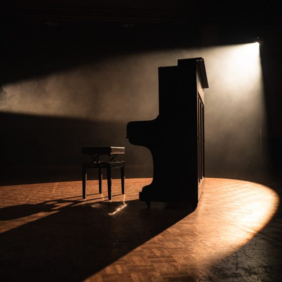
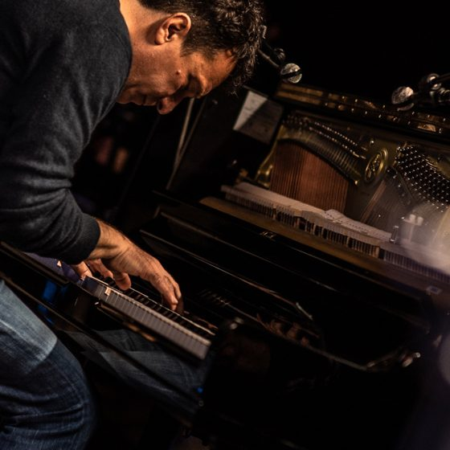

Laboratorio
Componi la tua musica
I racconti

Musiche che mi ispirano
Presto
Respirare
Presto
Pagine dal mio taccuino
Presto
Letture che mi hanno ispirato
PrestoDal palco alle persone
- La musica che nasce insiemePresto
- Partiture da scaricarePresto
- Giardini che ispiranoPresto
- Le vostre vociPresto